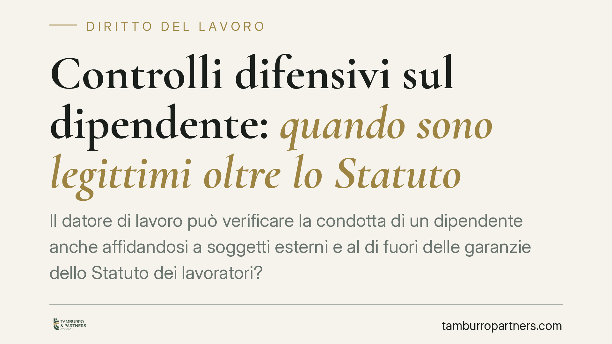

Controlli difensivi sul dipendente: quando sono legittimi oltre lo Statuto
Il datore di lavoro può verificare la condotta di un dipendente anche affidandosi a soggetti esterni e al di fuori delle garanzie dello Statuto dei lavoratori? Una recente pronuncia di merito torna sul tema dei cosiddetti controlli difensivi. La risposta non è un via libera: la legittimità resta vincolata a presupposti rigorosi, che conviene conoscere prima di agire.

Il caso
Una recente pronuncia di merito (sulla quale segnaliamo la necessità di una verifica puntuale degli estremi, data la circolazione di riferimenti non ancora consolidati) ha affrontato la legittimità di controlli disposti da un responsabile di struttura sanitaria su un dipendente sospettato di irregolarità.
La questione: tali controlli, affidati anche ad agenti verificatori esterni e condotti fuori dalle procedure degli artt. 3 e 4 dello Statuto, possono fondare un provvedimento disciplinare?
La risposta offerta è articolata. Non un'autorizzazione generalizzata, ma un riconoscimento condizionato: sì, a precise condizioni.
L'inquadramento normativo
Lo Statuto dei lavoratori (L. 300/1970) disciplina il potere di controllo del datore.
L'art. 3 prevede che i nominativi e le mansioni specifiche del personale addetto alla vigilanza sull'attività lavorativa siano comunicati ai lavoratori interessati. È una garanzia di trasparenza: il dipendente deve sapere chi lo controlla e in che veste.
L'art. 4 regola gli impianti e gli strumenti dai quali possa derivare un controllo a distanza dell'attività: ne subordina l'installazione ad accordo sindacale o autorizzazione amministrativa, salvo le eccezioni per strumenti di lavoro e di registrazione degli accessi.
Accanto a questo quadro, la giurisprudenza di legittimità ha elaborato la categoria dei controlli difensivi, distinguendo tra controlli difensivi "in senso lato" — diretti a verificare l'esatto adempimento della prestazione, soggetti alle garanzie statutarie — e controlli difensivi "in senso stretto", volti ad accertare condotte illecite del lavoratore lesive del patrimonio o dell'immagine aziendale. L'ancoraggio principale è nella pronuncia della Cassazione n. 25732/2021 (riferimento da riscontrare nel testo integrale), che ha consolidato tale distinzione.
Solo i controlli difensivi in senso stretto possono collocarsi al di fuori degli artt. 3 e 4, perché non hanno a oggetto l'attività lavorativa in quanto tale, ma un illecito già emerso.
I criteri di legittimità
La linea di confine non è l'etichetta, ma la ricorrenza di tre presupposti cumulativi.
Finalità mirata. Il controllo deve essere diretto ad accertare uno specifico illecito, non a sorvegliare genericamente la prestazione.
Proporzionalità. Mezzi e durata devono essere adeguati allo scopo, senza estensioni esplorative e senza invadenza eccessiva.
Indizi concreti preesistenti. Deve esistere, prima dell'avvio del controllo, un fondato sospetto basato su elementi oggettivi. Il controllo non può generare il sospetto: deve seguirlo.
È qui che si colloca il punto pratico decisivo: la tracciabilità del sospetto. Chi dispone il controllo deve poter dimostrare, con documentazione anteriore, che l'indizio esisteva già. In difetto, la verifica diventa una ricerca generalizzata e perde copertura.
Il profilo privacy
I controlli difensivi non sfuggono alla disciplina sui dati personali.
Restano applicabili il Regolamento (UE) 2016/679 (GDPR) e il D.Lgs. 196/2003 come novellato. In particolare vanno rispettati il principio di minimizzazione — raccogliere solo i dati necessari allo scopo — e la limitazione della conservazione, trattenendo le informazioni per il tempo strettamente utile all'accertamento e all'eventuale procedimento disciplinare.
Un controllo pure astrattamente legittimo sul piano giuslavoristico può risultare illecito se il trattamento dei dati è sovrabbondante o indefinito nel tempo.
Implicazioni pratiche
Per il datore di lavoro il margine esiste, ma è stretto. Affidarsi a verificatori esterni non elimina i vincoli: li sposta sul terreno della giustificazione preventiva e della proporzione.
Il rischio principale è duplice: l'inutilizzabilità delle prove raccolte, con caduta del provvedimento disciplinare, e l'esposizione a contestazioni sul trattamento dei dati.
Consigliamo di impostare qualsiasi attività di verifica come risposta documentata a un sospetto già formato, non come strumento di controllo preventivo.
Cosa fare in concreto
- Documenta il sospetto prima di agire: annota data, fonte e contenuto degli indizi che giustificano la verifica.
- Circoscrivi l'oggetto del controllo: definisci per iscritto cosa si intende accertare ed entro quali limiti temporali.
- Verifica la proporzione dei mezzi: scegli lo strumento meno invasivo idoneo allo scopo e scarta soluzioni esplorative.
- Applica minimizzazione e conservazione limitata: raccogli solo dati necessari e definisci un termine di cancellazione.
- Valuta preventivamente l'utilizzabilità: prima di contestare, fai esaminare la legittimità della raccolta per non compromettere il procedimento.
---
Contributo informativo a cura di Tamburro & Partners - Avv. Giuseppe Tamburro. Non costituisce parere legale.
Ogni storia di lavoro ha i suoi tempi.
Se gestisci HR e vuoi un confronto su contenzioso, ispezioni o licenziamenti, scrivi allo studio. Ti rispondiamo entro un giorno lavorativo.